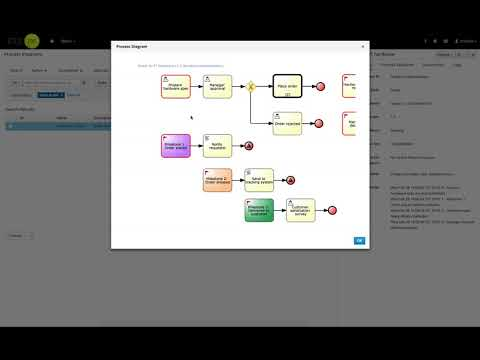

React to SLA violations in cases
As a follow up article for Track your processes and activities with SLA here is a short addon for case management. You can already track your SLA violations for cases, processes and activities but there is more to it.
jBPM 7.7 comes with out of the box support for automatic handling of SLA violations:
jBPM 7.7 comes with out of the box support for automatic handling of SLA violations:
- notification to case instance owner
- escalation to administrator of case instance
- starting another process instance as part of the case instance
With this you can easily enhance your cases with additional capabilities that will make sure your personnel is aware of the SLA violations. It can become crucial to make sure your customers are satisfied and you won’t mis any targets.
Let’s quickly dig into details of each of the mechanisms
As described in previous post, SLA violations are delivered via event listener (ProcessEventListener).
Notification to case instance owner
Notification is of email type. It will essentially create a dynamic Email task so to make this work you need to register EmailWorkItemHandler via deployment descriptor.
It’s implemented by org.jbpm.casemgmt.impl.wih.NotifyOwnerSLAViolationListener class and supports following parameters to be given (as part of its constructor):
- subject – email subject that will be used for emails
- body – email body that will be used for emails
- template – email body template that should be used when preparing body
node that template parameter will override body when given. See this article for more information about email templates and this one for using Email task.
You can use default values as well by simply using the default constructor when registering listener in deployment descriptor.
Email addresses are retrieved via UserInfo for users assigned to role “owner” of the case. If there are no such role or no assigned users this event listener will silently skip any notifications.
Escalation to administrator of case instance
Escalation to admin means that whoever is assigned to role admin in given case instance will get assigned new user task (regardless if admin case role has assigned users or groups).
Similar to notification, this is done via dynamic user task that is “injected” into case instance. Depending if the escalation is for case instance SLA violation or particular activity, administrator will see slightly different task name and description to help him/her identify the failing element.
It’s implemented by org.jbpm.casemgmt.impl.wih.EscalateToAdminSLAViolationListener class.
Starting another process instance as part of the case instance
Another type of automatic reaction to SLA violation is starting another process instance (of given process id) to handle SLA violation. This usually applies to more complex scenarios where handling can be multi step or requires many actors to be involved.
It’s implemented by org.jbpm.casemgmt.impl.wih.StartProcessSLAViolationListener class. This class requires a single parameter to be given when registering it and that is process id of the process that should be started upon SLA violations.
These are basic ways of handling SLA violations and their main purpose is to illustrate how users can plug their own mechanism to deal with this kind of situations. Users can:
- create their own listeners
- extend existing listeners (e.g. with notification one, you can just override the method responsible for building map of parameters for Email task)
- combine both
- compose listeners and take decisions which one to used based on the content of the SLAViolationEvent
- or anything else you find useful
Last but not least have a look how easy it is to extend our Order IT hardware case with SLA tracking and automatic escalation to administrator.

Stay tuned and let us know what you think!